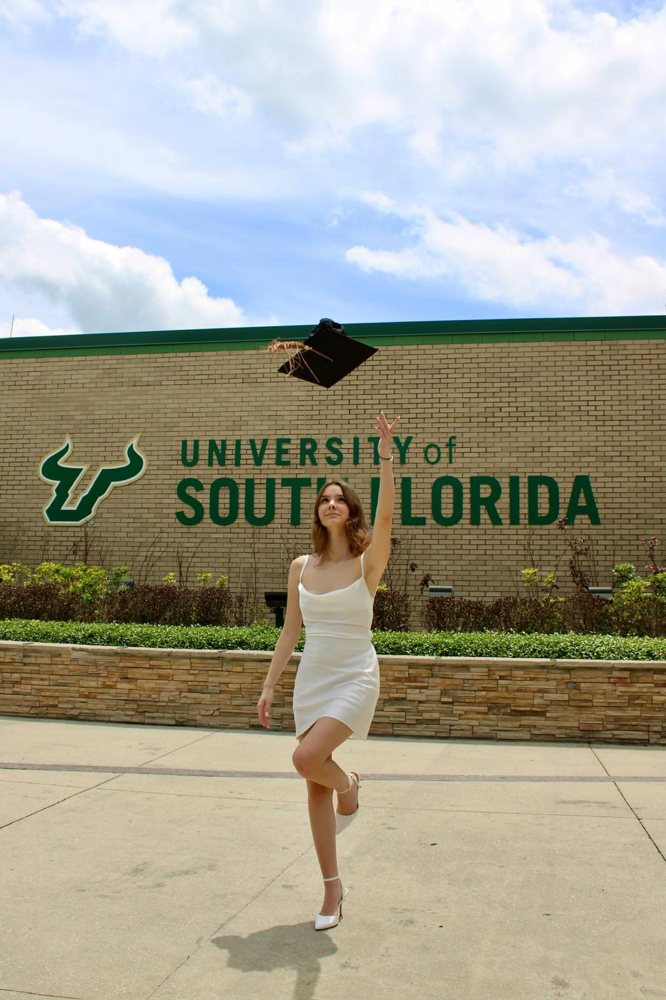
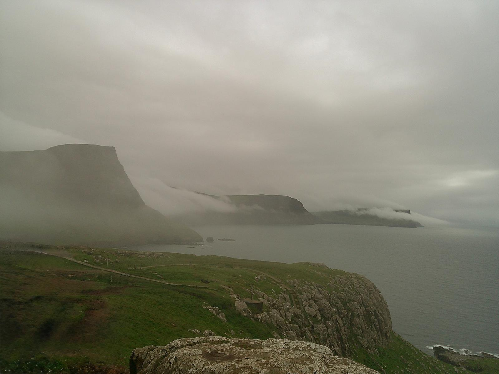
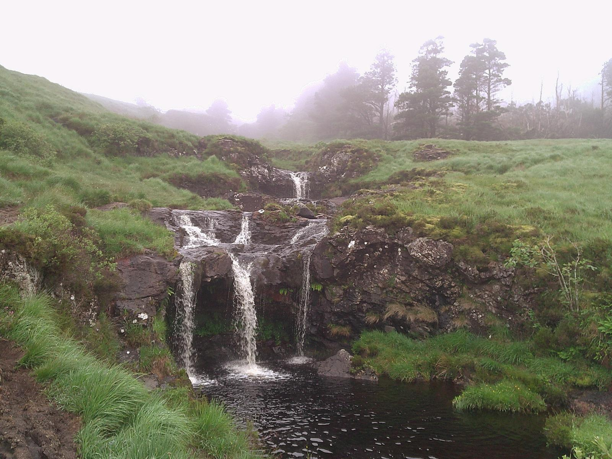

I.
Graduations
From cap-and-gown portraits to candid celebrations on campus — milestone imagery worthy of the years that earned it.
Photography · Videography · Broadcast
Editorial photography for graduations, engagements, and the celebrations worth remembering — shaped by a journalist's eye for story.
 Rebecca Kraft · Photos & Events
Rebecca Kraft · Photos & Events
I've always been enamored by the small moments in life. The way the sun hits the ocean waves, giggles after a secret shared, the smell of the air before it rains. I bring this love for the beauty of life into my work — whether it's a cap toss before graduation, a kiss after she says yes, or a smile on your first day.
— Rebecca Kraft
From cap-and-gown portraits to candid celebrations on campus — milestone imagery worthy of the years that earned it.
Engagement sessions, gatherings, and private celebrations captured with warmth and an unobtrusive presence.
Professional portraits and editorial work with a clean, considered, magazine-quality finish.
Narrative-driven video pieces that carry the same editorial eye and quiet attention as the still work.
Brand and product storytelling — planned, filmed, and edited to communicate with clarity and craft.
Short-form content built for reach — from concept and filming through post-production and delivery.



“You don't make a photograph with just a camera. You bring to the act of photography all the pictures you have seen, the books you have read, the music you have heard, the people you have loved.”
— Ansel Adams
Let's Work Together